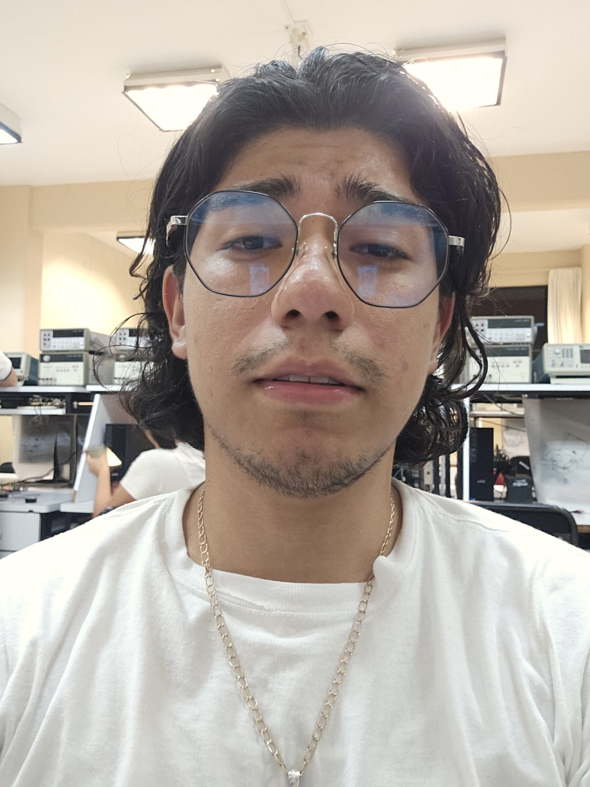

VoxID
Un sistema de identificación de hablante. El recorrido empieza en el micrófono: acondicionar la voz, adquirirla y extraer características para trabajar con ella en digital.
Seguir el desarrollo de VoxIDMI RINCÓN DE INTERNET
Soy Gustavo. Estudio Electrónica en la UTM y me gusta entender qué pasa por dentro: de un circuito, de un procesador y de las herramientas que uso todos los días.
C / C++RISC-V / FPGALinux
x(t) = A · sin(2πft) / VENTANA DE 1 s
A veces en la protoboard.
A veces en la terminal.
01 / QUIÉN ESTÁ DETRÁS

Estudio Ingeniería en Electrónica en la Universidad Tecnológica de la Mixteca. Mi mesa suele estar entre el hardware y el software.
Me interesan los procesadores RISC-V, las FPGA, los sistemas embebidos y el procesamiento de señales. También tengo mi lado Linux: configurar el entorno y escribir herramientas para trabajar a mi manera es parte de lo que disfruto.
GutsNet es donde voy reuniendo proyectos, materias y pruebas. Hay cosas en desarrollo; los repositorios muestran qué hay hecho y qué falta.
02 / CON LAS MANOS EN EL CÓDIGO
Del esquemático al repositorio.
Los avances y pendientes van incluidos.
Un sistema de identificación de hablante. El recorrido empieza en el micrófono: acondicionar la voz, adquirirla y extraer características para trabajar con ella en digital.
Seguir el desarrollo de VoxIDDiseño de una CPU basada en RV32I. Una forma de entender cómo una instrucción se convierte en operaciones, señales de control y movimiento de datos.
Abrir RV32IModulación senoidal por ancho de pulso para controlar una etapa de potencia trifásica. Firmware, simulación y diseño de la placa en el mismo proyecto.
Abrir SPWMMi entorno de desarrollo en Debian y Ubuntu. Configuraciones, funciones de shell y herramientas para programar, compilar y simular desde la terminal.
Asomarse a mis dotfilesEl laboratorio que sostiene este espacio: una web con Apache, servicios en Linux y clientes y servidores Echo y Daytime escritos en C.
Ver qué hay detrásUn robot con ATmega328P. El repositorio está creado; todavía falta publicar los archivos del proyecto.
Ver repositorio03 / ENTRE CLASE Y CLASE
Las materias que curso actualmente. Un espacio para ir reuniendo prácticas y apuntes sin mezclarlos con el catálogo de proyectos.
Ir al cuaderno de materias04 / EL PERFIL FORMAL
Formación en Electrónica, sistemas embebidos, diseño digital y Linux. Un recorrido por mis proyectos, las herramientas que uso y mi manera de trabajar.
05 / CAMBIAR DE FRECUENCIA
Un video, música de fondo
y el rincón multimedia de GutsNet.